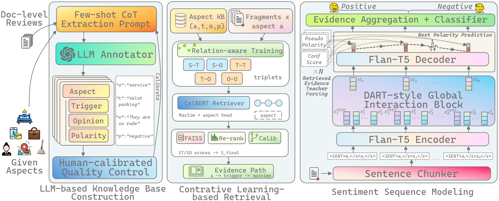
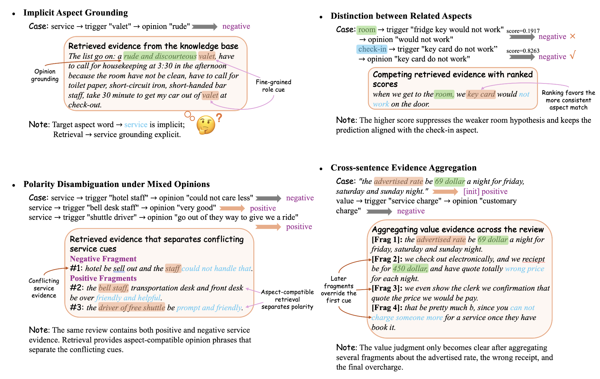

Knowledge-Augmented Sequence Modeling for Document-Level Aspect-Based Sentiment Analysis
Document-level aspect-based sentiment analysis requires predicting aspect-specific sentiment in long reviews, where evidence is often dispersed, implicit, and affected by discourse-level sentiment shifts. Existing document-level ABSA methods can model long-range interactions, but their evidence and external knowledge are usually encoded in latent representations, making predictions difficult to audit or ground to readable spans. We propose KASM, a knowledge-augmented sequence modeling framework for document-level Aspect Category Sentiment Classification. KASM constructs aspect-conditioned knowledge tuples with LLMs, grounds review fragments through relation-aware contrastive retrieval, and integrates the retrieved evidence into sequence modeling for discourse-level sentiment prediction. Experiments on BeerAdvocate and TripAdvisor show that KASM performs strongly on long-document settings while producing interpretable evidence paths. Qualitative analysis further shows that KASM can ground implicit aspects, aggregate distributed evidence, disambiguate mixed opinions, and distinguish semantically related aspects.
Long reviews often discuss multiple aspects at once. A hotel review may praise the location while criticizing the room, service, or check-in process. This makes document-level aspect-based sentiment analysis harder than sentence-level classification, because the model must identify aspect-specific evidence across a long context rather than relying on a single local opinion phrase [1], [2].
Existing approaches address this challenge from different angles. Document-level sentiment preference modeling captures global sentiment tendencies [3], diversified multiple-instance learning aggregates sentence-level evidence for multi-aspect classification [2], and recent instruction-based methods reformulate ABSA as a prompting or instruction-following task [4], [5]. KASM instead emphasizes explicit evidence grounding: the model links review fragments to aspect triggers, opinion phrases, and sentiment polarities before making the final aspect-level prediction.

Use an LLM to extract aspect-trigger-opinion tuples from raw reviews, inspired by recent work on instruction-tuned language models [6] and implicit sentiment reasoning [5].
Train a relation-aware retriever to match review fragments with aspect triggers and opinion phrases, following the motivation of retrieval-based example ranking for ABSA [7].
The table below compares KASM with representative document-level ABSA and instruction-based baselines, including DART [8], InstructABSA [4], GPT-5.5 few-shot prompting [9], and Retrieval-IT [7]. Results are reported on the full test set and on long documents over 512 tokens.
| Category | Model | BeerAdvocate | TripAdvisor | ||||||
|---|---|---|---|---|---|---|---|---|---|
| All Acc | All F1 | >512 Acc | >512 F1 | All Acc | All F1 | >512 Acc | >512 F1 | ||
| Task-specific | D-MILN | 79.86 | 80.12 | 87.85 | 86.09 | 79.52 | 79.03 | 83.61 | 83.13 |
| Doc-level ABSA | AB-DMSC | 85.98 | 85.21 | 88.14 | 86.59 | 81.26 | 80.46 | 84.04 | 83.44 |
| Baselines | DART [8] | 88.25 | 87.33 | 94.44 | 92.86 | 86.38 | 85.79 | 86.48 | 85.96 |
| Prompt-based | InstructABSA [4] | 88.67 | 87.97 | 81.25 | 79.83 | 80.26 | 81.71 | 70.01 | 69.65 |
| Fine-tuning | THOR | 79.85 | 78.63 | 75.49 | 76.15 | 79.83 | 78.45 | 80.06 | 79.43 |
| Direct LLM prompting | GPT5.5-zeroshot | 86.15 | 87.08 | 84.23 | 83.97 | 75.73 | 76.98 | 80.43 | 82.44 |
| Direct LLM prompting | GPT5.5-fewshot [9] | 86.45 | 87.31 | 85.56 | 84.15 | 79.92 | 80.35 | 79.68 | 80.12 |
| Knowledge-enhanced | Retrieval-IT [7] | 77.12 | 78.32 | 80.54 | 82.35 | 68.21 | 67.05 | 63.27 | 60.47 |
| Knowledge-enhanced | KASM | 88.36 | 88.53 | 90.31 | 89.26 | 87.84 | 87.11 | 87.14 | 86.52 |
Table 3: comparison on the full test set (All) and on long documents (>512 tokens).
KASM produces explicit evidence paths that help explain why a document is assigned a particular aspect-level sentiment. This is especially useful for implicit aspect grounding, cross-sentence aggregation, and mixed-opinion disambiguation, which are common challenges in document-level multi-aspect sentiment analysis [1], [2].

Example: linking “valet” to the service aspect and grounding it to an opinion phrase, following the need to resolve implicit sentiment cues in ABSA [5].
Aggregating evidence distributed across several review sentences, a core issue in document-level multi-aspect sentiment classification [1], [2].
Separating conflicting sentiment cues instead of collapsing the whole review into one polarity, which helps preserve aspect-specific sentiment distinctions [3].